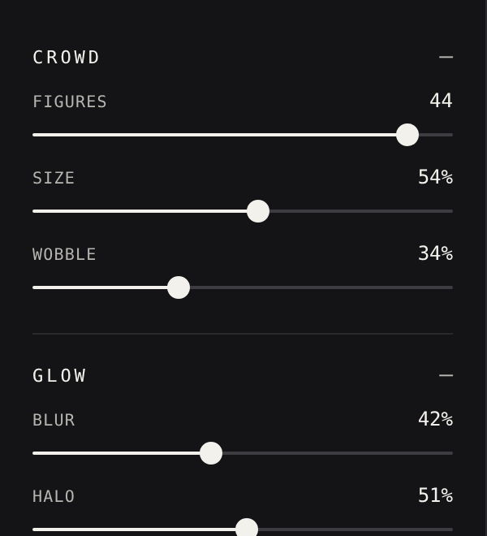
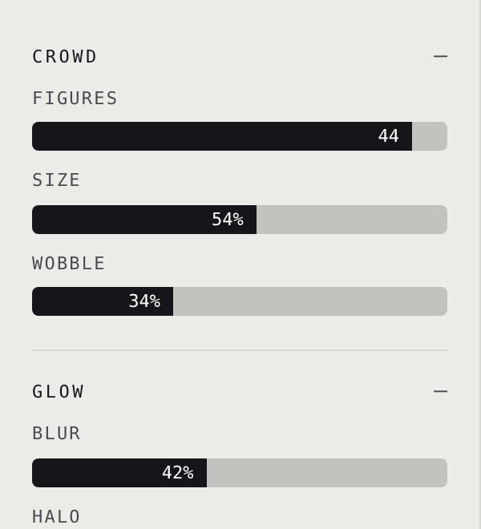
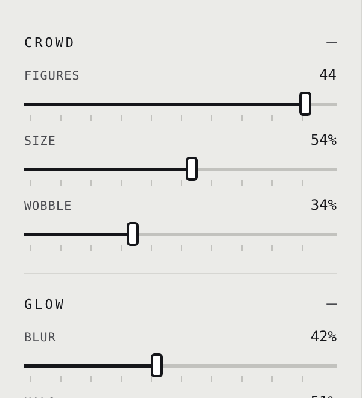
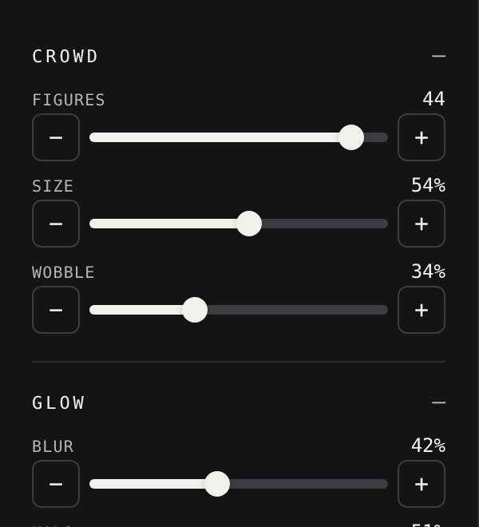
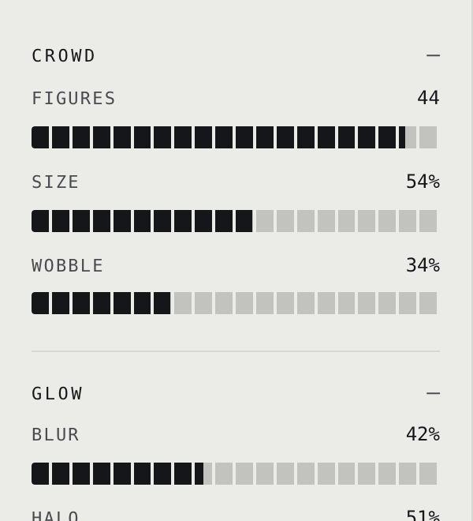

All five use the same page: option 1's single left rail with the Deck's top bar. Only the sliders differ. Back to the layouts.

A hairline made legible: 2px track, a small ring thumb, value at the right. The closest to today.

No thumb. The filled bar is the handle, like a volume slider, and the value sits inside it at the right end.

A ruler under the track, tick every ten percent, and a square thumb that reads like a fader cap.

Minus and plus at each end for one-step nudges, with a slim bar between for the big moves.

A meter of twenty blocks that fill as you drag, no thumb. Reads at a glance like a level on a mixing desk.